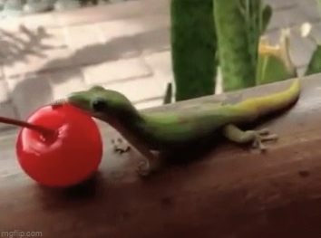

CherryGuard
A lightweight network-monitoring experiment for spotting unusual traffic near mission-critical fruit storage.
NETWORK SECURITYSmall lizard. Big security mindset. I help keep systems secure, uncover vulnerabilities, and occasionally take a very important cherry break.

I'm Corn Wallace Jaywalk, a cybersecurity specialist with a keen eye for suspicious activity and an even keener eye for ripe cherries. My work focuses on finding weaknesses before the bad guys do, from web application testing to home lab experiments.
When I'm not reviewing logs or auditing access controls, you can usually find me basking in the sun, scaling improbable surfaces, or defending my snack perimeter.
A lightweight network-monitoring experiment for spotting unusual traffic near mission-critical fruit storage.
NETWORK SECURITYA personal Linux homelab for testing system hardening, privilege boundaries, and secure configurations.
LINUX · HOMELABA collection of sample web application assessments, vulnerability writeups, and lessons learned in the field.
WEB SECURITYHave a project, security question, or a particularly good cherry recommendation? My inbox is open.